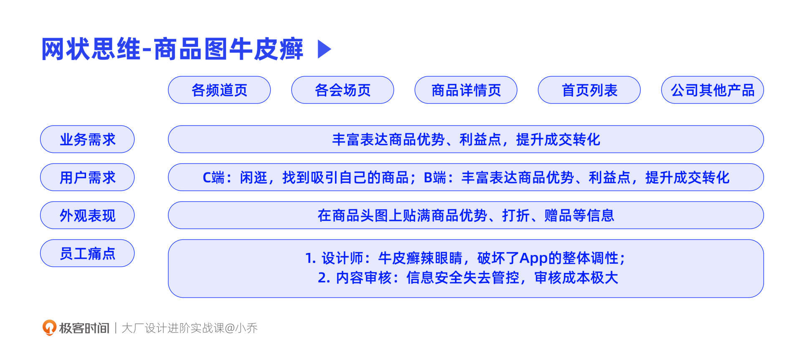

- 00 开篇词 升维思考，是设计师有效成长的第一步.md.html
- 01 业务周期：0-1-10-100-N的发展策略.md.html
- 02 商战模式：如何在商业竞争下突出重围？.md.html
- 03 市场洞察：如何找寻差异化撬动支点？.md.html
- 04 用户洞察：不懂用研的设计师不是好职场人.md.html
- 05 用户画像：是形式主义还是真的有效？.md.html
- 06 用户旅程：挖掘不同用户的核心机会点.md.html
- 07 职场晋升：看懂晋升的“游戏规则”.md.html
- 08 设计价值升级：五层进阶突破成长.md.html
- 09 基础价值 核心三原力：如何将需求转化为设计稿？.md.html
- 10 基础价值 第一性原理：从问题本质解决问题.md.html
- 11 基础价值 设计复盘：只是量化设计结果吗？.md.html
- 12 二级价值 负向网兜：如何全面发现负向问题？.md.html
- 13 二级价值 设计自驱：如何做好项目Owner？.md.html
- 14 二级价值 自驱合作：如何反内卷处理合作关系？.md.html
- 15 三级价值 增长误区：思维惯性陷阱和虚荣数据.md.html
- 16 三级价值 用户增长历程：AARRR是万能的吗？.md.html
- 17 三级价值 产品增长：如何做好产品创新？.md.html
- 18 三级价值 运营增长：如何自驱营销活动和投放？.md.html
- 19 三级价值 品牌增长 抢占心智，赢得人心红利.md.html
- 20 三级价值 增长实操：如何“步步为营”推动落地？.md.html
- 21 四级价值 L型赋能：让T型人才发挥更大价值.md.html
- 22 四级价值 “网状对比”解决共性痛点.md.html
- 23 五级价值 商业画布：设计师可以担任业务方吗？.md.html
- 24 五级价值 共创洞察：如何做好一次完善的workshop？.md.html
- 25 五级价值 领导力觉醒：写给新晋管理者.md.html
- 26 工作选择（上）：2B or 2C设计师？如何规划领域？.md.html
- 27 工作选择（下）：大厂 or 小厂？如何选择赛道？.md.html
- 28 人才地图：认知自我，成为高潜力人才.md.html
- 29 成长历程：如何从设计小白成长为团队负责人？.md.html
- 30 冰山模型：如何成为让面试官欣赏的“面霸”？.md.html
- 31 作品集指导：什么是面试官喜欢的作品集？.md.html
- 用户故事 什么是职场设计师进阶的正确姿势？.md.html
- 结束语 突破自我，成人达己.md.html
- 捐赠
22 四级价值 “网状对比”解决共性痛点
你好，我是小乔。
通过上节课的学习，相信你一定记住了两个概念，一个是T型人才，一个是L型赋能。
从四级价值起，就需要我们扩大项目的影响力，从而将设计价值最大化。这节课，就让我们一起探讨，如何通过横向对比不同业务或同一个业务中的多个项目，解决共性痛点，实现价值杠杆。
什么是网状对比分析法？
为什么要解决不同项目中的共性问题呢？因为用一次项目的孵化和落地成本，解决多个项目的共同问题，可以形成提升效率、降低成本、增加效益的商业价值。这也就是大家常说的“降本提效”或者“降本增效”。
我们该如何找寻多个相关项目之间的共同问题呢？我想向你分享一个我常用的方法——网状对比分析法。
为了将相关项目中的共同问题拆解出来，我们可以从不同的维度去思考。我通常会从4个方面去分析，分别是：业务需求、用户需求、外观表现和员工痛点。此时，横向的维度就是这4个维度，而纵向的维度就是各个不同的业务，或者同一个业务中的不同项目。
如下图所示，业务1、3、4、5，在这4个维度上都有许多共性问题，我们就可以用一套方法来解决相同的问题，然后再根据每个业务或者项目的特点做一定程度的定制。其中，业务2和其他业务有相似的问题，也有不同的地方，因此在考虑赋能给业务2时，一定要谨慎思考是否可以复用，是否可以帮助业务2达成业务目标。
我们以电商平台的商品图牛皮癣为例，做电商业务的同学往往会发现，不管在哪条业务线，哪个频道页，或在不同的电商App中，只要商品图由商家提供，牛皮癣就会存在。
我们分别从这四个维度来分析一下商品图牛皮癣。
从业务需求来看，商品表达更为丰富，可以提升成交转化，所以即便牛皮癣让界面凌乱不堪，但业务方往往对此并不反感。
从用户需求来看，可以分为C端买家和B端商家。C端买家穿梭于感兴趣的不同页面中，漫无目的地寻找打动自己的商品；而B端商家的目的是提升成交转化，没有更多可以表达商品的地方，只能通过牛皮癣把商品图“卷”起来，才能在激烈的竞争中脱颖而出。
从外观表现来看，电商平台的不同页面，不管是首页、频道页、会场页或是商品详情页，能充分表达商品的模块并不多，主要是头图。
从员工痛点来看，人工审核图片的工作必然是艰巨的，对我们设计师来说，看到乱糟糟的页面很辣眼睛，破坏了产品调性。
综合以上这4个维度，我们可以得出一些共性：B端商家和业务的需求都是提升成交转化，然而目前的产品结构其实无法满足商家自运营，可以自运营的地方就只有商品头图这小小的一方天地；对员工痛点来说，平台的体验和信息安全都已失去管控、审核效率低下。

此时，如果你是这家电商公司的设计师，会怎样处理牛皮癣的问题呢？其实机会点是非常多的，我们来举几个例子：
- 可以规范牛皮癣的设计样式，做成产品化工具，沉淀在商家后台里。商家只需要在字数限制内提供说明文案，就可以智能生成牛皮癣图片。这样一来，就只需要通过机器审核文案的安全性，减少了许多人工审核的工作。对设计师来说，也保持了统一调性；
- 商家缺少的是自运营的方式，除了商品图以外，也可以在其他结构上提供表达商品的方式，比如商品卡片上有不同类型的标签，或者购买商品有赠品时可以添加一个赠品模块等；
- 为了提升商品转化，除了画满牛皮癣以外，对于一些中高端品牌或商品，也可以提供其他更丰富生动的商品表达方式，比如AR试穿、360度展示、合成类视频模板等。
类似的情况其实也存在于许多社区产品中，比如小红书、B站等。创作者们为了吸引用户，封面图就变成了卷王们的战场。如果博主们审美在线，那封面图可以百花齐放，但如果审美不在线，其实就会影响产品的调性和美观度。此时，我们也可以设计一些产品化的工具，比如制作Plog的模板、合成封面图的模板等等。
实际案例分析
在了解了网状对比的方法之后，我们再通过两个实际案例，充分理解分析和实操的方法。
案例1：新零售设计工具
曾经在淘宝心选业务繁荣兴盛的时候，我们响应阿里的五新战略，在多个城市开设过线下店，达成了线上+线下+数据的新零售模式。
当时为了解决许多共性问题，我们自驱设计了3款提效产品，第1个是用来制作线下店的货架设计陈列工具，第2个是图文内容制作工具，第3个是商品素材管理工具，这些工具可以减少80%的工作量，且将上线时长缩短为原本的一半。
我们以图文内容制作工具为例。线下店需要制作大量的线下POP展示物料，比如价格牌、海报、货架指示牌、灯箱广告、纸堆头、吊挂等等。除了线下店的物料外，商品本身也需要包装设计，线上也有商品详情页，这些都是以固定的模板样式呈现的，通过替换商品图片和转化文案来覆盖所有商品。
在制作这些线上设计和线下物料的时候，就会遇到各种各样的共性问题，我们以“网状对比”来分析。
从上图可以看到，不管是线上的详情页设计，还是线下的吊挂海报、灯箱广告，都是为了将商品的优势讲清楚，提升成交转化，而外观表现也都是图文的表达形式。
对设计师来说，设计模板时可以体现设计价值，通过图片形式、排版样式、数据测试等方式沉淀出转化最好的设计方案，充分展示设计策略思维和设计手法。但在确定模板之后，替换商品图和文案就是一件无穷无尽的体力活，毕竟当时的商品SKU已经上万，线下店也有几十家。并且每次运营更新文案，都得重新改一遍设计稿。这些工作对设计师来说没有成长，且消耗时间。
于是我们找前端同学一起，商量自驱一套新零售设计工具，对我们业务的许多项目都有降本提效作用。在图文内容制作工具中，设计师将转化效果较好的模板样式沉淀下来，而运营同学可以在线将自己负责的内容填写好，然后一键生成打印物料。这样就大大减少了设计师重复改图的工作量，不同的运营同学也不需要反复将自己负责的商品信息传达给设计师，直接线上填写，多人可同步操作，这样最后组合而成的就是最终稿。
这套工具因为我们直接将其产品化了，除了造福淘宝心选的各个业务外，也同样可以开放给其他业务，实现了多个项目之间的L型赋能，也实现了业务与业务之间的L型赋能。
案例2：频道页组件工具
了解了新零售工具后，我们再来看看淘宝天猫的频道页导购工具。在淘宝首页的金刚位导购区域，就是淘宝天猫频道页，有的频道页由天猫业务完成，有的由淘宝业务负责。
淘宝根据用户分层，确定“人-货-场”的频道页导购框架后，在2018年前后，又进一步沉淀出频道页的设计策略。让用户记住这个场域、关注、反复回来逛，从而带动GMV的提升，就是频道页的主要目标。千人千面的商品流无法击中用户喜好，也无法形成用户心智，因此需要有代表性的模块信息，让用户快速明确这个频道页是做什么的，好在哪里。
在多个设计团队反复优化和测试的过程中，逐渐明确了“强心智-次心智-Feeds流承接”的设计策略。我们之前在第一性原理和推动增长项目的课程中，都讲过频道页的案例，这里我们来仔细说说。强心智模块帮助用户快速识别最能代表这个频道的信息，次心智用来二度承接用户需求，而Feeds流中有各种各样的内容，比如商品卡片、直播间、内容主题、小程序等。当强心智和次心智模块没有满足用户的时候，就可以用Feeds流进一步承接转化了。

但在设计这些频道页时，不管是设计方案本身，还是天猫和淘宝的多条设计团队在共同协作上，都存在许多问题，我们用“网状对比”来分析。
这些频道页在业务需求、用户需求、外观表现和员工痛点上的情况相同。我们以员工痛点来举例说明。
设计团队分散在淘宝和天猫设计部内，由多条团队各自负责不同的频道页业务，设计稿互通较为困难，难以达成体验一致性，比如同样是开通强心智区域的会员卡，不同频道页的开通流程都不一样。
对开发来说，导购作用相同的模块却需要反复设计成不同的尺寸大小，消耗时间，比如同样是一排三的商品坑位模块，有的高一点，有的矮一点，但对于转化率来说没有太大区别。
对业务方也就是产品和运营来说，每次需要改版调整，都要等待设计和开发的排期，由于大家都在同时支持多个项目，因此改版一个频道页需要大概2个月时间，并不是非常快捷有效。
于是我们就找到当时合作的开发同学，想做一个产品化工具，可以帮助各个业务高效搭建频道页。我们分了3个步骤来实现MVP版本。
步骤1：通盘对比各频道页的通用模块，将转化数据好的共性功能抽象出来。比如在强心智区域，有3大类模块，分别是商品内容型、档案工具型和互动玩法型。比如iFashion女装频道，就适合使用商品内容模块，主推各大潮流趋势；母婴频道和宠物频道适合档案工具模块，将宝宝或宠物的档案沉淀，根据档案来进行商品推送，也通过会员卡带动复购，提升用户ARPU值；校园频道适合打卡领奖的互动玩法，促进粘性。
步骤2：针对同一种功能，对比不同样式的数据情况，重新梳理模块设计样式。并且梳理出的模块样式，是需要具备可拓展性的，这样才能满足多个业务的不同需求。以下图的一排一卡片为例，同样是一个一排一的商品内容卡片，也许有副标题，也许有标签，也许有不同样式的行动点等。我们要沉淀出包容性高的几套模板，来满足不同业务。
步骤3：打包前台代码，设计成工具产品，并推动落地。如果只是将设计规范分发给各个设计团队，其实在实现落地时依然是低效的，仅能解决体验不统一的问题。因此将其做成工具，实现产品化，才是真正有效的解决方案。
在这个过程中，也需要发挥软实力，我们希望可以有一位产品经理加入，但一直没有找到合适的人选。所谓合适的人选，就是这个项目对TA也有利，他愿意投入日常工作以外的热情，和我们一起做出“超出预期”的价值。当时刚好有一位产品经理入职，想要做出成绩landing，我们和他描述了规划后，他表现出极大的热情，并且在后续的PRD中给予了巨大帮助。
最终我们落地的工具产品，可以更高效地配置频道页。设计师的重复劳动时间，可以释放出来，用于思考如何做出自己频道页的差异性，增强频道心智。而通用模块，就可以使用沉淀在搭建工具中的组件样式快速实现。对开发来说，也仅需要重新开发每个频道的差异性模块，大大减轻了工作量。对运营来说，一些次级页面和简单调整，可以直接由运营同学用工具搭建，最后只要给设计同学看下整体调性即可，平均2个月的上线时长缩短到平均2周就能更新。
需要再次强调的是，这个“强心智-次心智-Feeds流”的设计范式，非常适合几年前手机淘宝的发展，但未必适合每一个电商平台的每个阶段。淘宝的频道页也是经历了多次升级，在不同发展阶段调整不同的策略。不仅是设计视觉上的呈现，更包括了频道类别、选品逻辑、人群定位等方方面面的升级。
因此，我们在设计时，并不是到处看看别人是怎么做的就抄过来，而是应该回归自己业务的商业和用户角度，推导出设计逻辑。我们在看解决方案时，也不应该陷于最终方案是什么，而应该退回到业务目标上，思考这个阶段为什么是这个目标，学习整体的推导逻辑链，思考如果是我们来做，会怎样设计。
今日小结
今天，我们通过网状对比的分析方法，将有共性痛点或需求的业务，进行横向对比。通过对业务需求、用户需求、外观表现和员工痛点这4个方面的对比，找出一举N得的解决方案。
我们也通过新零售设计工具和频道页组件工具这两个案例，了解了“网状对比”的具体使用方法，在共性中找出解决方案，并将其产品化，达成降本提效的目标。但在这个过程中，需要根据不同业务的情况放大包容度，来满足不同业务的差异化需求，并且在产品化工具以外，也需要根据业务本身的特征进一步创新。
产品化工具是为了将重复劳动用沉淀好的工具替代，而不是为了造成限制。释放掉的时间和人力资源，就可以投入到更有意义的创新工作中去，创造更大价值。
互动时刻
回顾你过往的工作经历，当遇到重复的体力活劳动时，是如何解决的呢？你自驱做过产品化工具吗？
欢迎把你的经历和思考在留言区分享出来，与我和其他同学一起探讨。我们建立了一个读者交流群，欢迎你的加入！如果你觉得有所收获，也欢迎把文章分享给你的朋友一起学习。我们下节课见。
© 2019 - 2023 Liangliang Lee. Powered by gin and hexo-theme-book.